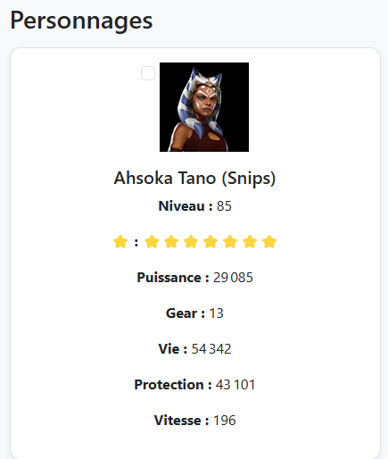

Ce projet consiste à exploiter l'API publique de swgoh.gg afin d'afficher dynamiquement des données sur les personnages du jeu Star Wars Galaxy of Heroes.
URL du projet en ligne : Voir le site
Détails complets du projet : Page descriptive du projet
J’ai intégré les données récupérées depuis l’API swgoh.gg dans mon site. Les tests d’intégration ont permis de vérifier :
Stats d'une unité récupéré dans le fichier JSon récupéré par l'Api
Affichage des données correspondante par rapport aux fichier Json
J’ai également effectué des tests d’acceptation pour valider la conformité fonctionnelle avec les besoins utilisateurs :